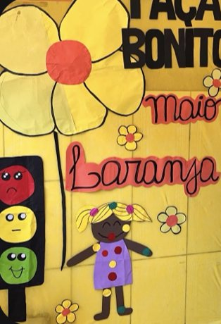
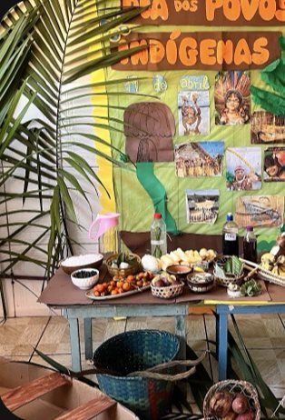

Salas climatizadas
Em Belém faz calor o ano inteiro. Com ar-condicionado nas salas, a criança fica disposta e concentrada durante a aula.
Educação Infantil e Ensino Fundamental, do Maternal ao 5º ano, com turmas pela manhã e à tarde.
Matrículas abertas, venha conhecer!A criança pode entrar pequena e seguir com a mesma escola por toda a Educação Infantil e os anos iniciais do Ensino Fundamental.
Em Belém faz calor o ano inteiro. Com ar-condicionado nas salas, a criança fica disposta e concentrada durante a aula.
Turmas acompanhadas por professoras que conhecem cada aluno pelo nome e conversam com a família.
Datas importantes viram projeto: meio ambiente, cultura indígena, literatura infantil, cidadania e proteção da infância.
Turmas pela manhã e à tarde, para a rotina da escola caber na rotina da família.
O coração está no nome e no dia a dia: respeito, paz e convivência são trabalhados em sala e nos eventos.
Na Passagem Bom Jesus, no Barreiro. Dá para levar e buscar a pé.
Alguns dos projetos que as turmas já realizaram. Cada data rende painéis, apresentações e atividades em família.
Economizar, reaproveitar e reduzir: as crianças levam a campanha para casa.
Dia do Livro Infantil e de Monteiro Lobato, com leitura e personagens.
Mostra de alimentos, artesanato e histórias dos povos da Amazônia.
Proteção da infância em linguagem de criança, com o semáforo do toque.
Homenagem às mães com painel e apresentação das turmas.
Pelas ruas do Barreiro: "Paz é a gente que faz" e "Brincar sem uso de telas".
Uma semana inteira de brincadeiras, passeios e surpresas.
Encerramento do ano com apresentação das turmas.


Os painéis são feitos com as crianças e mudam a cada projeto. Quando a família chega, vê o que o filho estudou naquele mês.
No Instagram da escola tem foto de todos os eventos, do desfile ao Natal.
Preencha os dados abaixo. O recado fica pronto para você enviar pelo WhatsApp da secretaria e marcar uma visita.
O WhatsApp abre com o texto pronto. A mensagem só é enviada quando você tocar em enviar no app.